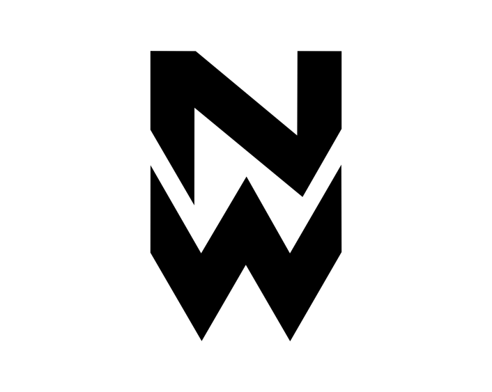

NOWAY
ESPORTS.
Uma identidade. Um propósito. Uma história em construção.
Conheça a organização brasileira que transforma talento individual em força coletiva.
NOSSO TIME.
Uma equipe em constante evolução. Conheça quem constrói a NOWAY dentro e fora do servidor.
RAINBOW SIX SIEGE
NÃO SEGUIMOS.
NÓS CONSTRUÍMOS.

Uma estrutura forte não depende de nomes fixos. Ela depende de pessoas comprometidas com o mesmo objetivo.
NOSSA HISTÓRIA.
UMA IDENTIDADE.
UM PROPÓSITO.
UMA HISTÓRIA EM CONSTRUÇÃO.
A NOWAY Esports é uma organização brasileira de esportes eletrônicos fundada por Nielss Uno, construída a partir da paixão pelo competitivo, da ambição de crescer e da vontade de estabelecer uma identidade própria no cenário nacional.
Com raízes em experiências competitivas anteriores, incluindo a MORI, a NOWAY representa a evolução de um projeto que busca transformar talento individual em força coletiva. Nossa filosofia vai além de reunir bons jogadores: acreditamos na disciplina, na inteligência estratégica, na comunicação e no comprometimento como pilares fundamentais para o sucesso.
Atualmente, nosso principal foco competitivo está no Rainbow Six Siege, modalidade em que buscamos desenvolver um elenco estruturado, preparado para enfrentar desafios e conquistar espaço em competições cada vez mais exigentes.
Nossa identidade carrega o orgulho de representar o Brasil, valorizando nossas origens e a comunidade que acompanha o crescimento dos esportes eletrônicos. Dentro e fora dos servidores, queremos construir uma organização reconhecida pela personalidade, profissionalismo e determinação.
Sob a liderança de Nielss Uno, como Founder & Owner, e Prado, na gestão competitiva como Team Manager, a NOWAY trabalha para estabelecer uma estrutura em que o desenvolvimento da equipe esteja acima de qualquer individualidade.
Ainda estamos escrevendo nossa história. Cada campeonato, cada jogador e cada experiência representa mais um capítulo de um projeto que não pretende se limitar ao presente.
NOWAY Esports — o futuro é construído, não prometido.
JORNADA COMPETITIVA.
Nossa trajetória competitiva, reunida em um único lugar.
ÚLTIMOS CONFRONTOS.
Placar e histórico de partidas finalizadas pela NOWAY.
ALÉM DO JOGO.
Transmissões, vídeos, bastidores e tudo que acontece com a NOWAY.
FEITA PARA DURAR.
NIEL
Direção estratégica e visão da organização.
PRADO
Gestão operacional, recrutamento, testes e decisões sobre o elenco competitivo.
Na NOWAY, cargos administrativos e vagas competitivas são independentes. O elenco é rotativo e nenhuma titularidade é permanente — inclusive a do Founder.